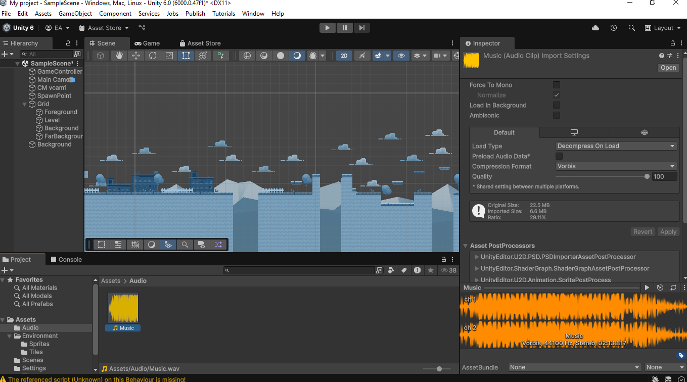

📖 História
Em uma fatídica noite de segunda-feira, Natasha Hakuna Matata, uma trabalhadora noturna, decide deixar seu ponto e correr atrás de seu primeiro cliente. Em sua jornada, precisa sobreviver aos perigos da noite — incluindo um faminto Lobisomem.
🎮 Gameplay
Inspirado no famoso jogo do dinossauro do Google Chrome, Runner do Amor é um game runner 2D com obstáculos, inimigos e power-ups. Natasha corre em busca de um cliente, mas logo a perseguição se torna uma corrida por sua vida!
👥 Personagens
-
Natasha Hakuna Matata: Corajosa e sarcástica, vive fugindo de enrascadas. Protagonista do jogo.
Lobisomem: Selvagem, veloz e faminto. Aparece em momentos críticos da corrida.
Cliente Misterioso: Velho libidinoso de 103 anos com frases duvidosas e humor ácido.
🖼️ Galeria
